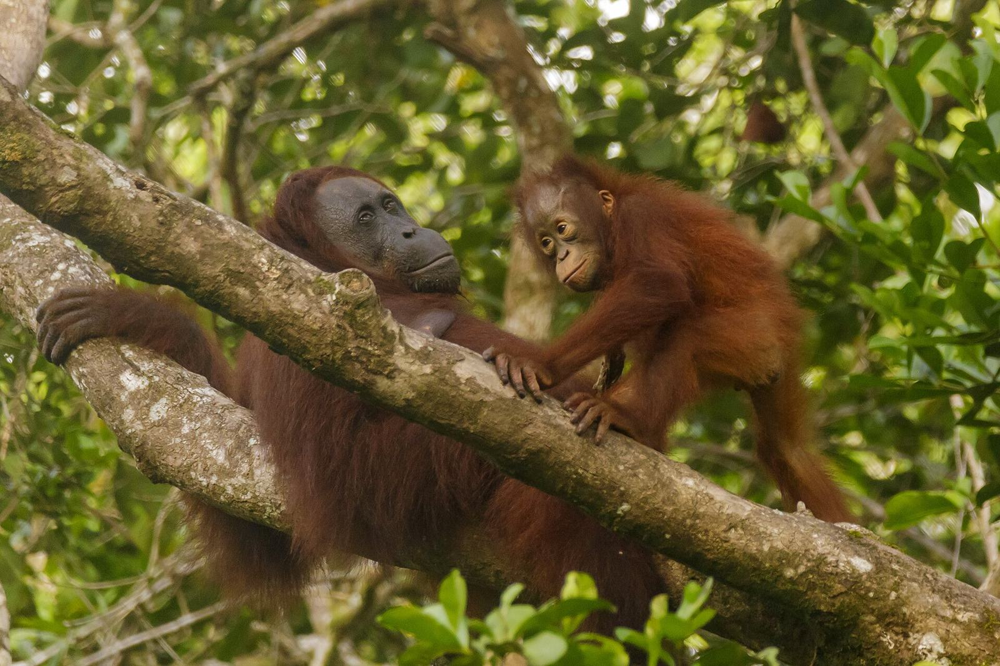

Borneo lost about 150,000 orangutans in 16 years, and most died in forests that were still standing.
Bulldozers and oil palm plantations are the usual picture of orangutan loss. The numbers tell a different story. This page works out how many orangutans a forest can hold, at three scales. Then it finds where most were lost.

Living spread out
The Bornean orangutan lives only on Borneo, the island shared by Indonesia, Malaysia and Brunei. It spends most of its life in the trees, eating fruit. Each night it builds a fresh nest of branches to sleep in.
Fruit trees are scattered through the forest, so orangutans live spread out. Ecologists describe this with population density: the number of animals in a given area. For orangutans, it is often given per 100 km².
Nobody can count every orangutan in a rainforest. Instead, survey teams walk or fly along straight lines and count the nests they see. From the nests, they work out how many orangutans must live there.
Density times area
Density turns into a head count with one multiplication: density times area. A team of scientists combined survey data from across Borneo to estimate the island's average density.
| Survey years | Orangutans per 100 km² |
|---|---|
| 1997 to 2002 | 15 |
| 2009 to 2015 | 10 |
Source: Santika and others, 2017, Scientific Reports 7: 4839.
The density fell by a third between the two survey periods. Across a whole island, that adds up to a huge number of orangutans.
One local survey shows how much density changes with scale. In 2017, a team counted nests in the Sungai Palin forest in West Kalimantan. They estimated about 1.29 orangutans per km², which is 129 per 100 km².
Source: Yanuar and others, 2020, Oryx 54: 763 to 766.
That is far higher than Borneo's average of 10 to 15. The island average includes cleared land, towns and mountains where few or no orangutans live. A good patch of forest holds many more.
Many students apply one density to every place. Density depends on scale. A density measured in one rich forest cannot be multiplied across a whole island.
Where were most orangutans lost?
A larger team combined 36,555 nest counts from 1999 to 2015 with satellite maps of the forest. They estimated that Borneo lost about 148,500 orangutans in those 16 years.
Source for this section and the next: Voigt and others, 2018, Current Biology 28: 761 to 769. The loss of 148,500 has a wide uncertainty range: from 48,100 to 252,300.
| Kind of land | Share of its orangutans lost | Share of all orangutans lost |
|---|---|---|
| Forest cleared, or turned into plantations | 63 to 75% | About 9% (about 14,000) |
| Standing forest, logged or never logged | 49 to 56% | Most of the loss |
In Kalimantan alone, standing forest accounted for about 93,000 orangutans, or 67% of that region's loss.
Cleared land lost its orangutans at the highest rate. Yet it caused only a small part of the total. The reason is scale: a high rate of a small number is still a small number.
So why did standing forest lose half its orangutans? The trees were still there. The scientists point to hunting. Interview surveys across Kalimantan suggest about 2,256 orangutans are hunted or killed in conflicts with people each year.
The number lost is the share lost times the number that lived there. A small share of a big population can beat a big share of a small one.
Regional populations
Rivers, roads and cleared land split Borneo's orangutans into separate groups. Orangutans rarely cross these gaps, so each group lives and breeds on its own. Voigt and others counted 64 of these regional populations.
| Population | Lost, 1999 to 2015 | Left in 2015 | Expected in 2050 |
|---|---|---|---|
| Western Schwaner | 42,700 | 40,700 | 31,100 |
| Eastern Schwaner | 20,100 | 16,800 | 14,700 |
| Karangan | 8,200 | 9,000 | 6,100 |
All three are in Kalimantan. The 2050 numbers count only forest expected to be cleared, not hunting. So the authors expect real numbers to be lower.
A population can also be too small to last. A viable population is one large enough to survive in the long run. For Bornean orangutans, experts set the line at about 100 animals.
Only 38 of the 64 regional populations are above that line. The other 26 still have orangutans, but probably not for long.
Orangutans breed slowly. A female raises one young at a time and cares for it for years. The study warns that killing about 1% of the breeding females each year can wipe out a population.
Sort by scale
Sort each finding by the scale it describes.
Each scale answers a different question. One forest shows how many orangutans good habitat can hold. A regional population shows whether a group can last. The whole island shows how big the total loss is.
Explain with data
Use numbers from at least two of the three tables. A strong answer uses both a share and a number of animals.
Prompt: A government can protect either cleared land or standing forest from now on. Use data at two scales to explain which choice would save more orangutans.
- Claim (1 mark): You choose standing forest, logged or never logged.
- Rates against totals (1 mark): You use Table 2 to show cleared land caused only about 9% of the loss.
- Density (1 mark): You explain that standing forest holds far more orangutans, so it has more to lose.
- A second scale (1 mark): You use Table 3 or the 38 of 64 viable populations to show what is at stake.
How many of your species does your protected area hold? Multiply its density by your area. Is the result above a viable population? Write the calculation in your project journal.